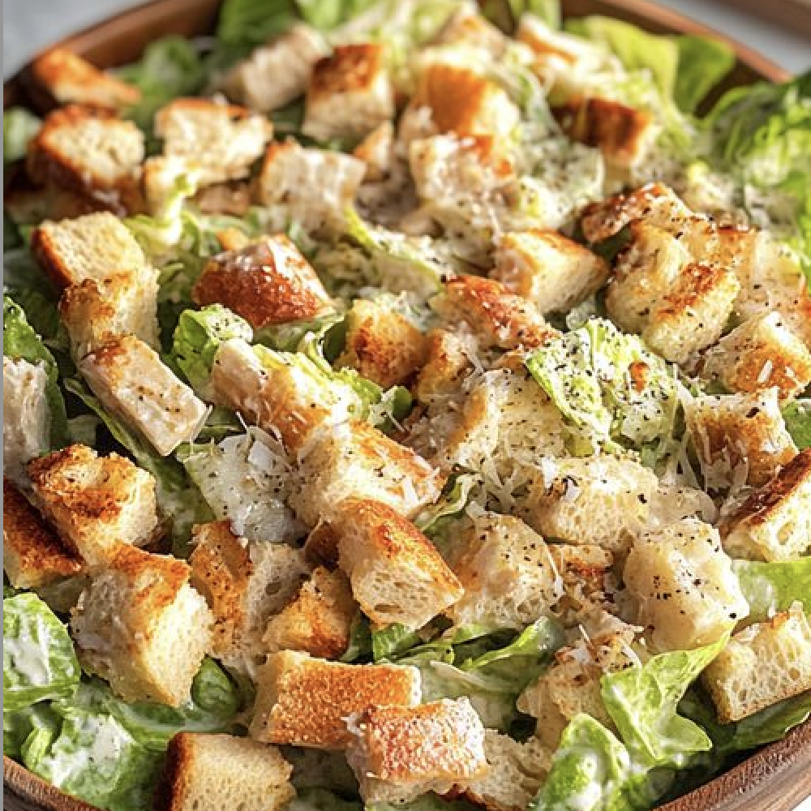

Caesar Salad

Ingredients:
- 1 head romaine lettuce, chopped
- 1 cup croutons
- 1/2 cup grated Parmesan cheese
- 1/4 cup Caesar dressing
- Salt and pepper to taste
- 1 teaspoon paprika
- Fresh herbs (rosemary, thyme)
Instructions:
- In a large bowl, combine the chopped romaine lettuce, croutons, and grated Parmesan cheese.
- Drizzle with Caesar dressing and toss to coat evenly.
- Season with salt, pepper, and paprika to taste.
- Garnish with fresh herbs if desired.
- Serve immediately or refrigerate for later.